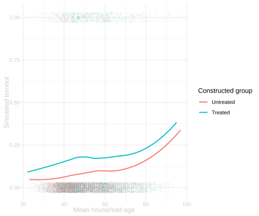

Observational Studies and Confounding
$$ \newcommand{X}{} \newcommand{Y}{} % A hex digit after # inside a macro body is eaten by build-time expansion, so digit-leading hexes spell # via .
$$
What Randomization Bought Us
In the real Gerber–Green–Larimer experiment, households did not choose whether to receive the Neighbors letter. The investigators randomized the assignment. Conditional on the arm counts, every household had the same assignment chance. That symmetry made the observed treated-control difference an unbiased estimate of an average causal effect.
The real household-level difference is \hat\tau=0.085.
An observational study starts differently. Treatment happens through decisions made by people, institutions, or circumstances. The treated and untreated groups can therefore differ before treatment occurs.
A Constructed Observational Study
We will keep real GGL household covariates and construct a teaching simulation. The construction is not a claim about how the GGL letters were assigned; their actual assignment was randomized.


The true average effect in this simulated population is \bar\tau=0.051. The raw treated-control difference is \hat\Delta_{\mathrm{raw}}=0.089.
The raw difference is not estimating only the effect of treatment. Treated households were more likely to contain prior voters, and prior voters also had higher untreated potential outcomes. The comparison mixes a treatment effect with a pre-existing difference.
Confounding
Let X_j collect pretreatment information such as age and prior voting. Under unconditional randomization, W_j\ \perp\ \{y_j(0),y_j(1),X_j\}.
In the constructed observational study, assignment depends on X_j, while the potential outcomes also depend on X_j. Consequently treatment status carries information about what would have happened without treatment: \mathop{\mathrm{E}}[y_j(0)\mid W_j=1]\ne\mathop{\mathrm{E}}[y_j(0)\mid W_j=0]. This is confounding. Even if treatment had no effect, the raw groups could have different outcomes.
Comparing Like With Like
If the variables that drove assignment are observed, a plausible replacement for unconditional randomization is conditional randomization: W_j\ \perp\ \{y_j(0),y_j(1)\}\mid X_j.
This says treatment may depend on X_j, but among households with the same X_j it does not depend further on their potential outcomes. Then we compare treatment and control within covariate groups before averaging those comparisons.
Using coarse prior-voting and age groups gives an adjusted difference of 0.055, closer to the simulated truth than the raw difference. The remaining discrepancy reflects finite samples and coarse grouping.
The Limit of Adjustment
Adjustment works only for information represented in X_j. If an unrecorded variable affects both treatment and outcomes, treated and control households can still differ within every observed covariate group. The conditional-randomization story is then false.
That is the central distinction:
- In an experiment, the assignment mechanism supplies the independence claim.
- In an observational study, conditional independence is an assumption that must be defended from knowledge of how treatment was chosen.
Takeaways
- The real GGL comparison is experimental; the observational assignment here is explicitly constructed.
- Confounding is a pre-existing difference in potential outcomes across treatment groups.
- Comparing like with like can remove confounding by observed pretreatment variables.
- Whether that comparison has a causal interpretation depends on an assignment claim, not on the appearance of the adjusted estimate.